- 文章首发于简书：LIDC-IDRI肺结节公开数据集Dicom和XML标注详解，现在搬运至博客。
一、数据来源
数据集采用为 LIDC-IDRI (The Lung Image Database Consortium)，该数据集由胸部医学图像文件(如CT、X光片)和对应的诊断结果病变标注组成。该数据是由美国国家癌症研究所(National Cancer Institute)发起收集的，目的是为了研究高危人群早期癌症检测。
该数据集中，共收录了1018个研究实例。对于每个实例中的图像，都由4位经验丰富的胸部放射科医师进行两阶段的诊断标注。在第一阶段，每位医师分别独立诊断并标注病患位置，其中会标注三中类别：1) >=3mm的结节，2) <3mm的结节，3) >=3mm的非结节（官网描述： “nodule > or =3 mm”， “nodule <3 mm"，="" and="" "non-nodule=""> or =3 mm”，详见 Summary）。在随后的第二阶段中，各位医师都分别独立的复审其他三位医师的标注，并给出自己最终的诊断结果。这样的两阶段标注可以在避免forced consensus的前提下，尽可能完整的标注所有结果。
| Collection Statistics | updated 3/21/2012 |
|---|---|
| 数据大小 | 124GB |
| 图像类型 | CT (computed tomography), 243,958 张 DX (digital radiography) CR (computed radiography) |
| 图片数 | 244,527 |
| 患者数 | 1,010 |
| 系列数 (Number of Series) | 1,018 CT 290 CR/DX |
| 研究数 (Number of Studies) | 1,308 |
二、解析结果
1.图像矩阵像素信息
模块处理的数据为slicer * rows * cols大小的三维矩阵D。D中第z个切片y行x列的元素对应的位置为：(z * rows *cols+ y * cols + x) * sizeof(data_type) 。其中rows表示图像的行数，cols表示图像的列数，默认均为512；data_type代表数据类型，默认为short。
eg: 对于病例LIDC-IDRI-0001，即为133*512*512的矩阵，一共133张切片，每张大小512*512，依次按顺序存入二进制文件，每个像素大小为2字节（对应short类型）。
2.结节区域类型标注信息
第一行： slicers rows cols data_type pixel_space_x pixel_space_y slice_thickness
slicer： 切片个数；rows： 矩阵行数，默认512；cols： 矩阵列数，默认512；data_type： 数据类型标签。为以下枚举类型中的一种（默认SHORT_TYPE，4）：enum DATA_TYPE {CHAR_TYPE，UCHAR_TYPE, INT_TYPE，UINT_TYPE，SHORT_TYPE，USHORT_TYPE，FLOAT_TYPE，DOUBLE_TYPE }；pixel_space_x： x线列扫描步长，单位：毫米；pixel_space_y： x线行扫描步长，单位：毫米；slice_thickness： z轴扫描步长(即切片厚度)，单位：毫米。
其他行： type num x1 y1 z1 x2 y2 z2 … xi yi zi … xn yn zn
type： “1”表示”nodules”， “2”表示”small_nodules”，”3”表示”non_nodules”；num：该行x,y,z数字的个数（由于一个点有三个坐标，所以num为3的倍数）；Xi,Yi,Zi：该肺结节第i个点的空间坐标，Zi为切片序号。
三、数据分析
文件结构
目前测试一共1012个病例数据，每个病例文件夹对应结构：
LIDC-IDRI-XXXX / Study Instance UID / Series Instance UID / *.dcm， *.xml
- XXXX ：从0000到1012；
- Study Instance UID ：每个病例对应的检查实例号；
- Series Instance UID ：不同检查对应的序列实例号；
- *.dcm ，*.xml ：分别对应于每一张dcm切片和xml标注文件。
特例 ：LIDC-IDRI-0365号病例存在两份序列检查，分别有对应的dcm和xml文件，如下：
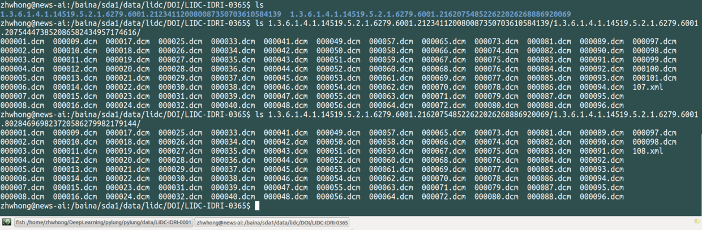
python处理Dicom数据
通过pip或者anaconda安装pydicom模块，该模块是python专门用来处理dicom格式文件的库。
通过dicom.read_file()可以直接获取dicom文件所有信息，如下：
|
|
实际操作LIDC-IDRI-0001（GE MEDICAL SYSTEM公司）中000001.dcm，打印出来结果如下（包含各种tag，具体详见 DICOM的常用Tag分类和说明）：
|
|
想要访问任何信息都可以通过前面的tag进行获取,一些特殊标记也可以通过keyword获取，如下：
|
|
本次实验中主要会使用到tag (0x0008, 0x0018)获取SOP_ID，以唯一区别每一张图，然后使用tag (0x7fe0, 0x0010)获取像素信息pixel_array，一张CT图像有 512x512 个像素点，在dicom文件中每个像素由2字节表示，所以每张图片约512KB大小。图像中每个像素都是整数，专业名称为 Hounsfield scale 或 CT Number，是描述物质的放射密度的量化值(参考Wikipedia)。
另外，不同公司生产的仪器包含信息略有不同，比如LIDC-IDRI-0069（TOSHIBA公司）中000001.dcm如下：
|
|
可以看到不同公司所做的检查存储信息的格式不太一样，但一些主要信息都还是有的：
SOP Instance UID：用于唯一区分每一张dcm切片，其中Study Instance UID，Series Instance UID上面已经提过，分别用于区分检查号和一次检查对应序列号。Modality：表示检查模态，有MRI，CT，CR，DR等；Manufacturer：表示制造商，经分析共有”GE MEDICAL SYSTEMS”（最多）， “SIEMENS”， “TOSHIBA”， “Philips”四家制造商提供数据；Slice Thickness：表示z方向切片厚度，经统计有GE MEDICAL SYSTEMS：2.50， 1.25，SIEMENS：0.75，1.0， 2.0，3.0，5.0，TOSHIBA：2.0， 3.0， Philips：2.0，1.0，1.5，0.9；Instance Number：表示一组切片的序列号，这个可以直接用来将切面排序，在实际CT扫描时，是从胸部靠近头的一侧开始扫描，一次扫描到肺部最下，得到的instance number依次增加，对应的Image Position中的z依次减小，而对应的Slice Location是相对位置，绝大多数情况与Image Positon中的z值相同，依次减小，部分不同公司，如TOSHIBA则Slice Location可能与Image Position中的z不同，由于是相对位置，其Slice Location值为正，并且和Instance Number的变化趋势相同。为了在实际分析是不出现错误，不能仅仅采用Slice Location来对切片进行排序，而应使用Instance Number或者Image Position中的z，此次实验使用的是Instance Number。Image Position：表示图像的左上角在空间坐标系中的x,y,z坐标，单位是毫米，如果在检查中，则指该序列中第一张影像左上角坐标；Slice Location：为切片z轴相对位置，单位毫米，大多情况与Image Position中的z相同，但TOSHIBA公司提供的数据里面不同，所以不能仅仅根据这个值来对所有切片进行统一排序；Photometric Interpretation：光度计的解释,对于CT图像，用两个枚举值MONOCHROME1，MONOCHROME2.用来判断图像是否是彩色的，MONOCHROME1/2是灰度图，RGB则是真彩色图，还有其他；Pixel Spacing：表示像素中心间的物理间距；Bits Allocated：表示存储每一位像素时分配位数，Bits Stored 表示存储每一位像素所用位数；Pixel Representation：表示像素数据的表现类型:这是一个枚举值，分别为十六进制数0000和0001，0000H = 无符号整数，0001H = 2的补码。
XML标注信息说明
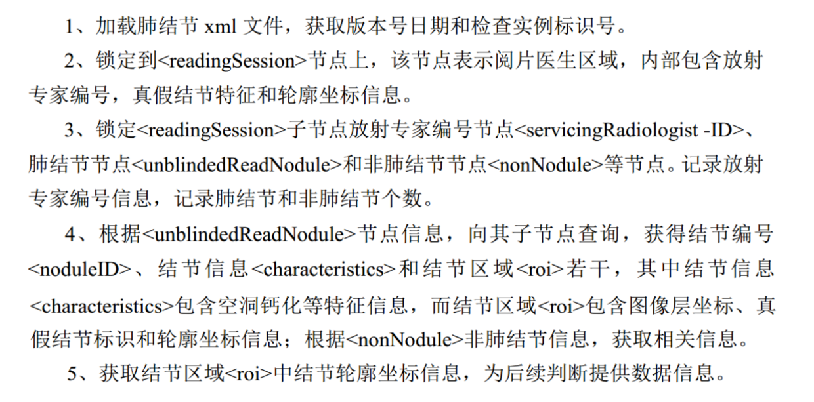
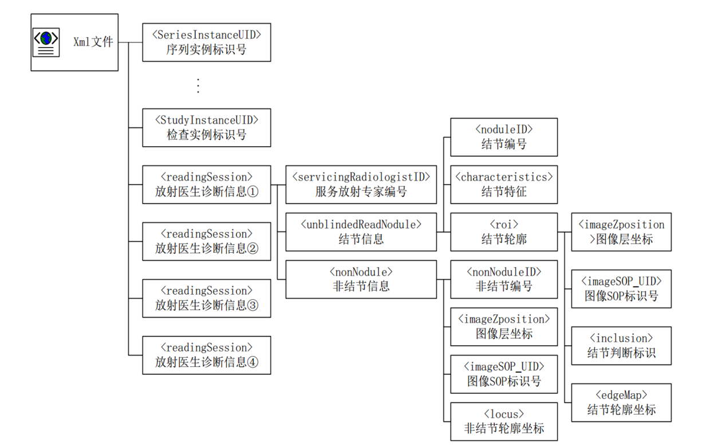
具体分析可以参见本人简书：LIDC-IDRI肺结节Dicom数据集解析与总结。
分析之后回生成一个pkl文件，存储有每张图里面所有结节信息，包含三种结节，分别是small_nodules，nodules，non_nodules，每一种结节信息以list存储，list中每一项是一个结节块，具体结构是一个字典，包含两个键’centroid’和’pixels’，分别是结节中心点坐标和具体像素信息坐标，坐标以点对(x,y)的形式存储。
分析得到的pkl部分结果展示如下：
|
|
分析所有1012个病人XML标注信息，存在如下问题：
医生标注信息可能有误（个人觉得）!!!!!!
对所有病例跑完标注脚本（/home/zhwhong/API/get_txt.sh）时，在生成的log日志（/baina/sda1/data/lidc_matrix/get_txt.log）里面发现有问题的病例有四个，分别是LIDC-IDRI-0017，LIDC-IDRI-0365，LIDC-IDRI-0566，LIDC-IDRI-0659。
- 【LIDC-IDRI-0017】

我们找到这个不存在的sop_uid，为”1.3.6.1.4.1.14519.5.2.1.6279.6001.305973183883758685859912046949”，然后找到病例17对应的XML文件，看一下医生的标注信息，带有这个sop_uid的标注有两个，分别是医师2和医师4。我们看一下他们的标注：
医师2：
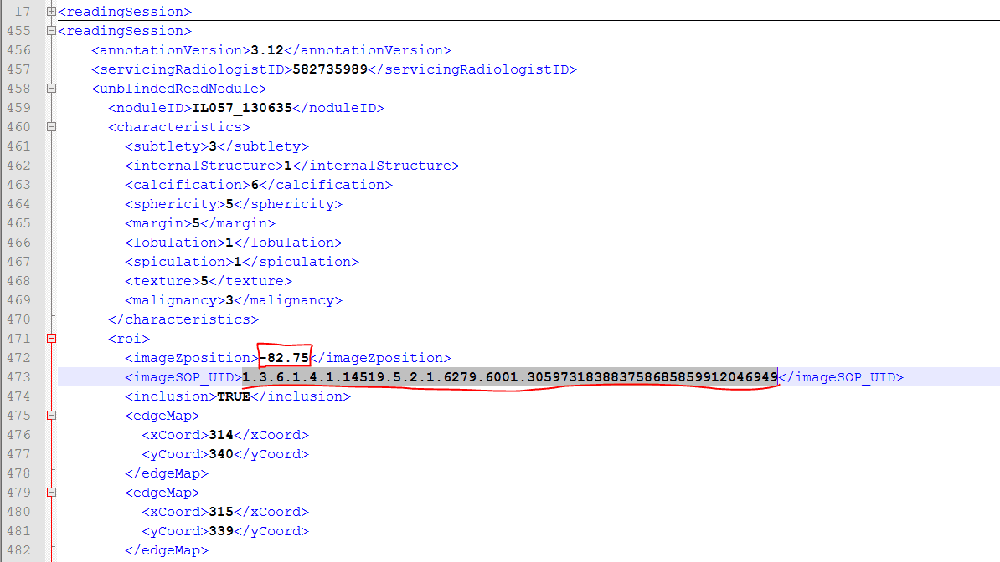
医师4：

对，有两个医师都标注了这个sop_uid，并且对应的ImageZposition为 -82.75，我们再在XML文件中找到ImageZposition为 -82.75 的另外两个医师是否有标注，结果是有，但是另外两个医师标注的 -82.75 的位置对应的切片的sop_uid和医师2,4不同，分别如下：
医师1：
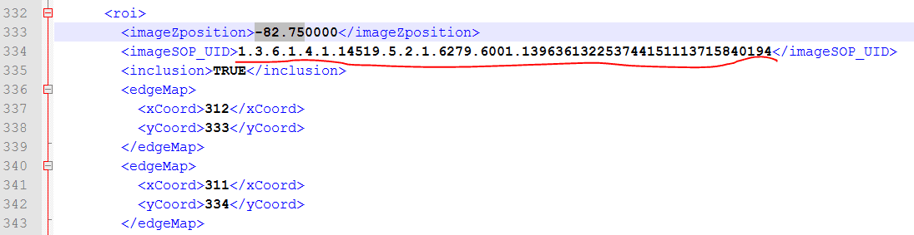
医师3：

这就很尴尬了，同一个ImageZpositon，但是却标了不同的sop_uid，于是追根溯源，看一下到底是怎么回事，自己写脚本遍历LIDC-IDRI-0017中所有dcm切片，打印出所有切片sop_uid，作对比，然后发现在所有的结果中，根本没有找到医师2,医师4标记的那个sop_uid，而医师1，医师3的标注是存在的，如下：
医师2、4标记的sop_uid找不到：

医师1,3标记的找到了：
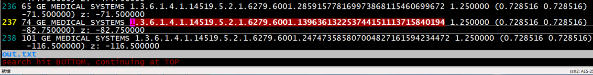
所以初步认定，LIDC-IDRI-0017病例中，医师2和医师4存在两处错误的标注信息（sop_uid错误）
- 【LIDC-IDRI-0365】
LIDC-IDRI-0365中存在两份检查序列，分别是：
1.3.6.1.4.1.14519.5.2.1.6279.6001.212341120080087350703610584139 / 1.3.6.1.4.1.14519.5.2.1.6279.6001.207544473852086582434957174616 和
1.3.6.1.4.1.14519.5.2.1.6279.6001.216207548522622026268886920069 / 1.3.6.1.4.1.14519.5.2.1.6279.6001.802846969823720586279982179144，
存在问题的是第二份序列，问题同17号病例类似，如下：
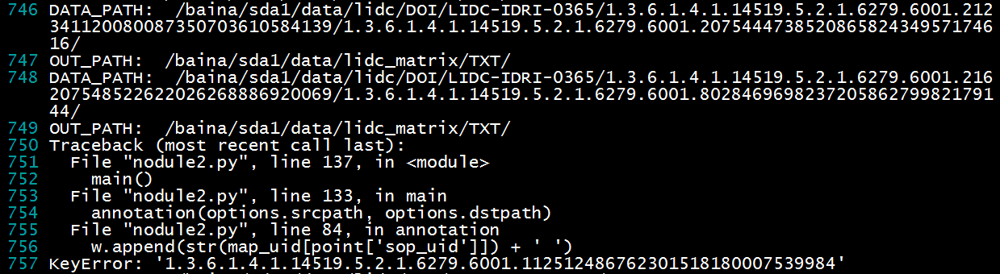
找到医生标注如下（四位医师标注相同）：

同样遍历LIDC-IDRI-0365中第二份序列，找不到对应标记的切片sop_uid：
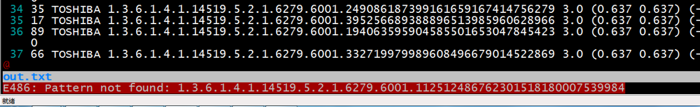
- 【LIDC-IDRI-0566】
存在和上面相同的问题：
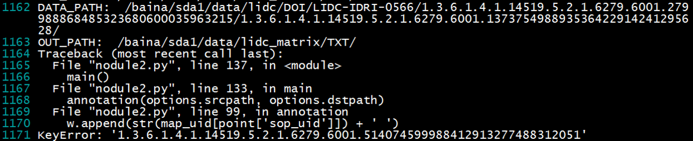
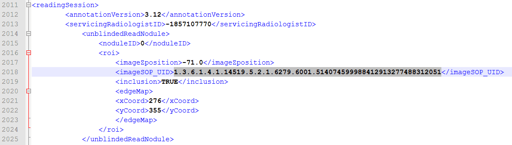

- 【LIDC-IDRI-0659】
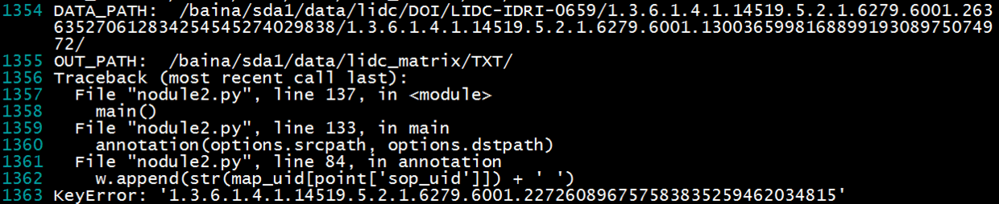
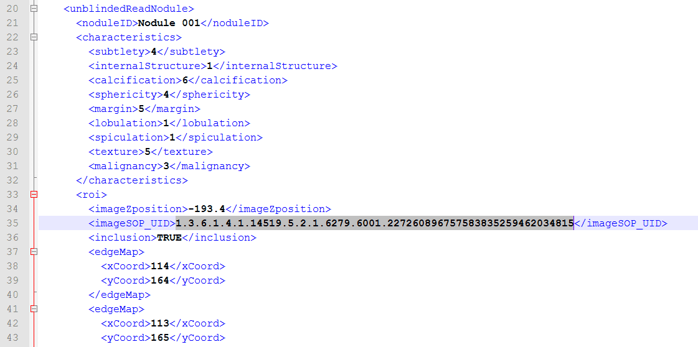
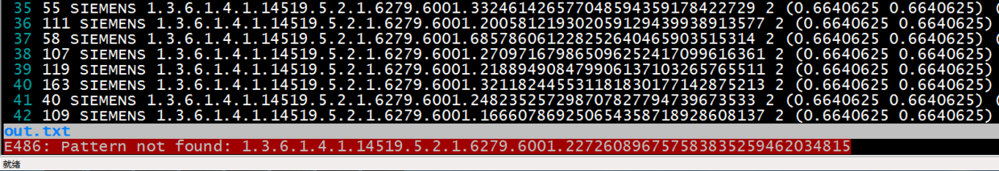
(文章首发于简书：LIDC-IDRI肺结节公开数据集Dicom和XML标注详解，现在搬运至博客。转载请联系作者并注明出处，谢谢！)